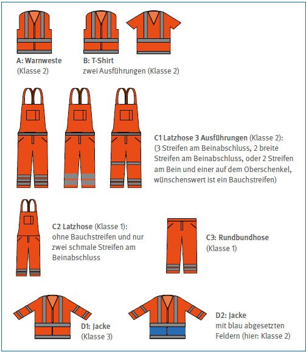

Persönliche Schutzausrüstungen (PSA) sind immer als letztes Mittel anzuwenden, wenn technische und organisatorische Schutzmöglichkeiten ausgeschöpft sind. Da einige PSA-Arten mit einer mehr oder weniger großen Tragebelastung für Beschäftigte verbunden sind, gilt hier der Grundsatz: So viel wie nötig, so wenig wie möglich.
Richtig angewendete PSA können vor schweren Verletzungen und Gesundheitsschäden schützen. Die Benutzung von PSA birgt jedoch auch Risiken.
Für die Bereitstellung und sichere Benutzung von PSA gelten daher einige grundsätzliche Regeln:
Der Arbeitgeber muss persönliche Schutzausrüstungen kostenfrei zur Verfügung stellen. Zugleich ist es die Pflicht der Beschäftigten, die bereitgestellten PSA auch zu benutzen.
Persönliche Schutzausrüstungen müssen stets entsprechend dem Ergebnis der Gefährdungsbeurteilung ausgewählt werden. Die besonderen Gegebenheiten der Arbeitsumgebung müssen dabei berücksichtigt werden (z. B. Einsatz flammhemmender Schutzkleidung bei Vermessungsarbeiten auf Raffinerien). Allgemein werden bei Vermessungsarbeiten insbesondere die folgenden persönlichen Schutzausrüstungen verwendet.
Warnkleidung wird nach europäischer Norm entsprechend der Mindestflächen von fluoreszierendem Hintergrundmaterial und reflektierendem Material in drei Klassen unterteilt, wobei Klasse 1 die niedrigste und Klasse 3 die höchste Warnwirkung erzielt.
Personen, die im Straßenbereich arbeiten oder sich dort aufhalten, müssen Warnkleidung in fluoreszierend orange-rot oder gelb nach DIN EN ISO 20471 tragen. Die Warnkleidung muss grundsätzlich der Klasse 3 entsprechen. Sie kann bei geringem Gefährdungspotenzial auf Klasse 2 reduziert werden, wenn folgende Voraussetzungen gegeben sind:
Verschlechtert sich die Warnwirkung der Kleidung, z. B. durch Verschmutzung oder Abnutzung, muss diese ausgetauscht werden.

Abb. 3 Beispiele für Warnkleidung
Die Design-Beispiele können in der Praxis anders aussehen. Im jeweiligen Etikett steht die Warnkleidungsklasse neben dem Piktogramm.
Tabelle 1 Beispiele für Kombinationen von Warnkleidung
| Gefährdung | warm (sommerliche Temperaturen) |
kalt (winterliche Temperaturen) |
| Einfache Gefährdung: Warnkleidung Klasse 2 |
mindestens A oder B oder C1. C2 oder C3 allein sind nicht ausreichend! |
Mindestens D2 (ggf. mit C1, C2 oder C3) oder A über warmer Kleidung, C2 oder C3 allein sind nicht ausreichend! |
| Erhöhte Gefährdung: Warnkleidung Klasse 3 erforderlich |
mindestens (A oder B) zusammen mit C1, C2 oder C3 (ganzer Körper wird mit Warnkleidung bedeckt). |
Empfehlenswert ist D1 mit C1, C2 oder C3, mindestens jedoch D1. |
Wetterschutzkleidung schützt gegen Nässe, Wind und Kälte bis minus 5 °C. Bei der Auswahl von Wetterschutzkleidung sollte besonders darauf geachtet werden, dass das verwendete Material Wasserdampf vom Körper aus durchlässt, um physiologische Belastungen zu vermeiden, gleichzeitig aber Wasser und Wind von außen abhält.

Abb. 4
Piktogramme zur Kennzeichnung von Kleidung zum Schutz gegen Regen (links) und Kettensägenschnitte (rechts)
Schnittschutzkleidung erhält ihre Schutzwirkung in der Regel durch Metalleinsätze oder spezielle Kunsttextilien. So gibt es beispielsweise spezielle Schnittschutzhosen für die Verwendung von Kettensägen.
Die Schutzkleidung sollte zur Aufrechterhaltung der Schutzwirkung nur den Herstellerangaben entsprechend gereinigt sowie trocken und geschützt vor schädigenden Einflüssen gelagert werden.
Ab- und Vermarkungsarbeiten, Wegräumen von Hindernissen (z. B. Baumaterialien, Zäune oder Dornenhecken), Arbeiten mit der Motorsäge oder der Umgang mit scharfen und spitzen Objekten sind Beispiele für Tätigkeiten, bei denen das Tragen von Schutzhandschuhen erforderlich ist. Bei diesen Tätigkeiten kommen Schutzhandschuhe gegen mechanische Gefahren zum Einsatz, die an dem in Abbildung 5 dargestellten Piktogramm zu erkennen sind.

Abb. 5
Piktogramm "Schutz gegen mechanische Gefahren"
Daneben gibt es Schutzhandschuhe für chemische und thermische Gefährdungen sowie Handschuhe mit besonderen Stech- und Schnittschutzeigenschaften. Bei der Auswahl von geeigneten Schutzhandschuhen für chemische Gefährdungen geben die Sicherheitsdatenblätter zu den einzelnen Chemikalien wertvolle Hinweise.
Bei der Auswahl von Schutzhandschuhen müssen neben dem bestmöglichen Schutz der Hände auch die Aspekte Tragekomfort, Tastgefühl und Greifvermögen sowie die korrekte Größe beachtet werden. Zudem können Unverträglichkeiten gegenüber bestimmten Inhaltsstoffen vorliegen (z. B. Latex).
Sicherheitsschuhe mit der Kennzeichnung S sind in acht Kategorien eingeteilt.
Schuhe der ersten Kategorie "SB" besitzen einige grundsätzliche Sicherheitsmerkmale, z. B. bezogen auf das Obermaterial, das Futter und die Laufsohle. Sicherheitsschuhe der Kategorien S1 bis S3 sind aus Leder oder anderen Materialien gefertigt, besitzen eine Zehenschutzkappe und haben je nach Kategorie zusätzliche Eigenschaften. Tabelle 2 gibt einen Überblick über die häufigsten Eigenschaften-Kombinationen. Sicherheitsschuhe der Kategorien S4 und S5 sind Gummi- oder Polymerstiefel speziell für Nassbereiche. Sicherheitsschuhe der Kategorien S6 und S7 müssen gegenüber S2- bzw. S3-Schuhen zusätzlich eine hinreichende Wasserdichtheit aufweisen.
Schuhe in den verschiedenen Kategorien gibt es zudem mit zusätzlichen Schutzeigenschaften für besondere Anwendungsbereiche, z. B. Schnittschutz oder Kälteisolierung.
Orthopädische Einlagen dürfen nur verwendet werden, wenn ein Sicherheitsschuh die Baumusterprüfung in Kombination mit der jeweiligen Einlage erfolgreich durchlaufen hat. Bei einem eigenmächtigen Tausch von Einlegesohlen können sicherheitsrelevante Eigenschaften der Sicherheitsschuhe, z. B. die elektrische Leitfähigkeit oder der Abstand der Zehen zur Zehenschutzkappe, beeinträchtigt werden. Einige Hersteller von Sicherheitsschuhen bieten baumustergeprüften orthopädischen Fußschutz an, der im Sinne eines Maßschuhs individuell angepasst werden kann.
Tabelle 2 Kurzzeichen für die Kennzeichnung der häufigsten Kombinationen von sicherheitsrelevanten Grund- und Zusatzanforderungen für Sicherheitsschuhe
| Eigenschaft | Kurzzeichen für die Kennzeichnung von Sicherheitsschuhen S |
|||||||
| (Merkmal) | SB | S1 | S2 | S3, S3L, S3S*) |
S4 | S5, S5L, S5S*) |
S6 | S7, S7L, S7S*) |
| Grundanforderungen | I/II | I | I | I | II | II | I | I |
| Geschlossener Fersenbereich | I | I | I | II*) | II*) | I | ||
| Antistatische Eigenschaften | I | I | I | II | II | I | I | |
| Energieaufnahme im Fersenbereich | I | I | I | II | II | I | I | |
| Wasserdurchtritt/-aufnahme | I | I | I | I | ||||
| Widerstand gegen Durchstich | I | II | I | |||||
| Profilierte Laufsohle | I | II | I | |||||
| Wasserdichtheit im zusammengebauten Zustand | I | I | ||||||
| Dichtheit | II | II | I | |||||
| I | Schuhe aus Leder oder anderen Materialien, hergestellt nach herkömmlichen Schuhfertigungsmethoden (z. B. Lederschuhe) |
| II | Schuhe vollständig geformt oder vulkanisiert (Gummistiefel, Polymerstiefel, z. B. aus Polyurethan (PUR) – für den Nassbereich) |
| *) | Widerstand gegen Durchstich mit metallischer Einlage Typ P oder Nichtmetallischer Einlage Typen PL und PS |
| **) | Gilt nicht für Form A von Schuhen der Klasse II mit offenem Fersenbereich und/oder Perforation |
| Hinweis: Tabelle/Kategorisierung gilt nicht für Hybridschuhe – Kennzeichnung SBH |
Gehörschutz muss nach der Lärm- und Vibrations-Arbeitsschutzverordnung vom Arbeitgeber bereitgestellt werden, wenn der Tages-Lärmexpositionspegel, das heißt der mittlere Schallpegel bei einer 8-Stunden-Schicht, 80 dB(A) beträgt, oder wenn der höchste vorkommende Schallpegel 135 dB(C) erreicht. Ab einem Tages-Lärmexpositionspegel von 85 dB(A) bzw. einem Spitzenschalldruckpegel von 137 dB(C) muss Gehörschutz von den Beschäftigten getragen und die Lärmbereiche müssen gekennzeichnet werden.
Die folgende beispielhafte Aufzählung enthält einige Arbeiten, in deren Nähe oder bei deren Ausführung immer Gehörschutz getragen werden sollte:
Es lassen sich grundsätzlich drei Arten von Gehörschutz unterscheiden:
Schutzhelme sind überall dort erforderlich, wo Gefahr durch herabfallende Gegenstände und pendelnde Lasten droht oder wo mit dem Anstoßen des Kopfes zu rechnen ist. Dies kann z. B. auf Baustellen, in Tunneln und in Steinbrüchen der Fall sein.
Üblicherweise werden zum Schutz des Kopfes Industrieschutzhelme aus thermoplastischen oder duroplastischen Kunststoffen benutzt. Helme aus thermoplastischen Kunststoffen sind empfindlich gegen Temperatureinwirkungen und altern schneller. Sie sollten spätestens nach vier Jahren ausgetauscht werden. Duroplastische Helme haben dagegen eine Lebensdauer von etwa acht Jahren und können auch in sehr heißen Umgebungen genutzt werden.
Schutzbrillen sind unverzichtbar bei allen Tätigkeiten, bei denen die Augen durch Splitter, Körner, Stäube, Späne und andere Fremdkörper geschädigt werden können.
Grundsätzlich lassen sich zwei Formen von Schutzbrillen unterscheiden: Die Gestellbrille und die Korbbrille (siehe Abbildung 6). Korbbrillen sind aus elastischem Kunststoff gefertigt und werden vor allem zum Schutz gegen chemische Gefährdungen eingesetzt.
Alltägliche Korrektionsbrillen besitzen keine ausreichende Schutzwirkung und können somit nicht als Ersatz für persönlichen Augenschutz dienen. Wenn das Tragen von Korrektionsbrillen erforderlich ist, kann bei gelegentlichen und kurzfristigen Arbeiten zum Schutz der Augen eine Korbbrille über der Korrektionsbrille getragen werden.
Die Farbe der Gläser hat vor allem Auswirkungen auf die Farbwahrnehmung. Abgesehen von farblosen Gläsern verfälschen graue, braune und grüne Gläser die Farbwahrnehmung am wenigsten.
Zum Schutz des gesamten Gesichtes sind zudem Schutzschirme und Visiere erhältlich.
Sonnenbrillen gehören ebenfalls zu den persönlichen Schutzausrüstungen und müssen bei entsprechendem Ergebnis der Gefährdungsbeurteilung vom Arbeitgeber zur Verfügung gestellt werden.

Abb. 6 Gestellbrille (links) und Korbbrille
Persönliche Schutzausrüstungen gegen Absturz (PSAgA) dienen dem Schutz vor schweren Unfällen mit oftmals tödlichem Ausgang. Besonders bei Arbeiten mit Absturzgefahr ist immer genau zu prüfen, ob nicht technische Lösungen (z. B. fest eingerichtete Geländer, Seitenschutz aus Holzbrettern, Gerüste) gefunden werden können.
Ein ordnungsgemäßer Zustand der einzelnen Komponenten, regelmäßige praktische Übungen und die Beachtung der erforderlichen lichten Höhe unterhalb der jeweiligen Person sind wichtige Voraussetzungen zur Sicherstellung der Schutzwirkung der PSAgA.
Zudem müssen persönliche Schutzausrüstungen gegen Absturz vor jeder Benutzung auf sichtbare Mängel und mindestens einmal pro Jahr durch eine sachkundige Person überprüft werden. Wenn Zweifel bestehen, ob die PSAgA funktionsfähig bzw. sicherheitsgerecht eingesetzt werden kann, z. B. wegen nicht geeigneter Anschlageinrichtungen, dürfen die Ausrüstungen nicht benutzt und die betreffenden Arbeiten mit Absturzgefahr auf keinen Fall durchgeführt werden.
PSAgA haben außerdem eine bestimmte Gebrauchsdauer, die auf keinen Fall überschritten werden darf. Sie ist, wie auch andere wichtige Informationen zur korrekten Benutzung, in der Herstellerinformation angegeben.
Um die Schutzausrüstungen zu befestigen, können dauerhaft installierte, also z. B. fest mit dem Gebäude verbundene, Anschlageinrichtungen genutzt werden. Sind diese nicht vorhanden, muss zeitlich begrenzt auf andere, nachgewiesenermaßen ausreichend tragfähige Teile von Bauwerken zurückgegriffen werden, wie z. B. Stahlträger. Grundsätzlich muss der oder die Aufsichtführende Anschlagpunkte am jeweiligen Arbeitsplatz festlegen.
Beschäftigte sind im Umgang mit PSAgA zu unterweisen. Die Unterweisung muss dabei auch praktische Übungen enthalten.
Ebenso ist zu berücksichtigen, dass eine Person unverzüglich gerettet werden muss, nachdem sie bei einem Sturz von der PSAgA aufgefangen wurde. Dazu ist ein funktionierendes Rettungskonzept festzulegen.
Atemschutzgeräte kommen zum Einsatz, um Gesundheitsgefahren für die Atemwege durch Stäube, Gase, Dämpfe oder Nebel zu minimieren.
Bei Vermessungsarbeiten in staubbelasteten Umgebungen kommen üblicherweise Filtergeräte zum Einsatz. Das Filtermaterial von partikelfiltrierenden Halbmasken wird in folgende Klassen eingeteilt:
Je höher die Konzentration des gesundheitsgefährlichen Staubes in der Umgebungsatmosphäre ist, desto höher muss die Filterklasse gewählt werden.
Zum Schutz vor Gasen müssen spezielle Gasfilter beziehungsweise Kombinationsfilter, die sowohl Partikel als auch Gase filtern, gewählt werden.
Das Tragen von Atemschutzgeräten bringt immer auch eine Belastung für den Träger oder die Trägerin mit sich, so dass Gebrauchsdauerbegrenzungen beachtet werden müssen. Zu berücksichtigen sind dabei äußere Faktoren, wie z. B. das Umgebungsklima am Arbeitsplatz, aber auch die individuellen körperlichen Voraussetzungen der Benutzerinnen und Benutzer.
Wenn Atemschutzgeräte zum Schutz gegen tödliche oder irreversible Gesundheitsschäden verwendet werden, müssen Unterweisungen auch praktische Übungen umfassen.
Rechtliche Grundlagen und weitere Informationen
|